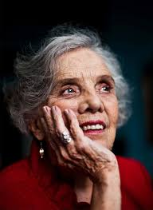
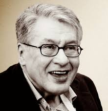

2020: Louise Glück2019: Peter Handke2018: Olga Tokarczuk2017: Kazuo Ishiguro2016: Bob Dylan2015: Svetlana Aleksiévich2014: Patrick Modiano2013: Alice Munro2012: Mo Yan2011: Tomas Tranströmer2010: Mario Vargas Llosa2009: Herta Müller
2020: Francisco Brines2019: Joan Margarit2018: Ida Vitale2017: Sergio Ramírez2016: Eduardo Mendoza2015: Fernando del Paso2014: Juan Goytisolo2013: Elena Poniatowska
2012: José Manuel Caballero Bonald2011: Nicanor Parra2010: Ana María Matute2009: José Emilio Pacheco